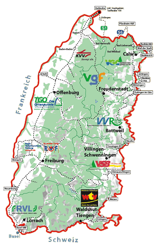

<div class="container">
  <div class="container-fluid">
    <h1>Die schönsten Ausflugsziele mit KONUS erreichen!</h1>
    <h2>Tourentipps mit der KONUS-Gästekarte</h2>
    <br><br>
    <p class="lead">Nutzen Sie Ihre KONUS-Gästekarte und fahren Sie innerhalb der teilnehmenden Verbundgebiete kostenlos mit Bus und Bahn zu den schönsten Ausflugszielen im Schwarzwald!</p>

    <div class="col-lg-4">
      <p></p>
    </div>

    <div class="col-lg-8">
      <br>
      <h2>Wie können Sie KONUS nutzen?</h2>
      <p class="lead">Mit Ihrer Anmeldung bei Ihrem Gastgeber in einem der teilnehmenden Urlaubsorte, erhalten Sie die Schwarzwald-Gästekarte (Kurkarte). Die Schwarzwald-Gästekarte ersetzt die Örtliche Kurkarte und erlaubt ermäßigte Eintritte in zahlreiche Einrichtungen des gesamten Schwarzwaldes.</p>
      <p class="lead">Mit dem KONUS-Symbol versehen wird die Schwarzwald Gästekarte, neben vielen anderen Leistungen, zum Freifahrausweis.</p>
      <p class="lead">Die KONUS-Gästekarte gilt im eingetragenen Zeitraum Ihres Aufenthaltes im Nahverkehr in allen Bussen und Bahnen der teilnehmenden Verkehrsverbände (siehe Übersichtskarte) als Fahrausweis in der 2. Klasse.</p>
      <p>Hinweis: Ausgeschlossen sind ICE-, IC- und EC-Verbindungen sowie Bergbahnen.</p>
      <p class="lead">Geltungsbereich KONUS-Gästekarte Stand 2020</p>
      <a class="btn btn-default" href="https://www.schwarzwald-tourismus.info/planen-buchen/konus-gaestekarte" target="_blank" rel="noopener noreferrer" role="button">Tourismus info &raquo;</a>
    </div>
  </div>
</div>
